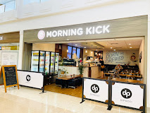
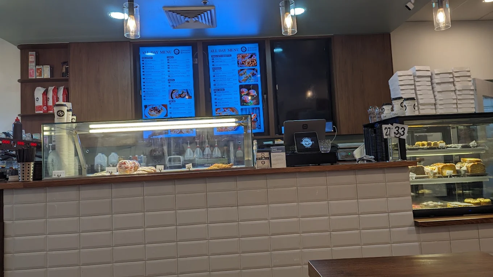

Our Story
Morning Kick Cafe started with a straightforward mission: to provide exceptional specialty coffee, satisfying house-made food, and a warm, dependable spot for the Macquarie Fields community to refuel. What began as a passion project among local coffee enthusiasts quickly transformed into a neighborhood staple where regulars are greeted by name and every cup is crafted with care.

Built for the Community
Based right near Glenquarie Town Centre, we see firsthand how fast-paced mornings can get for our locals. Whether you are racing to catch your morning train, dropping the kids off at school, or looking for a comfortable corner to study with a hot drink, we wanted to build a space that fits into your daily routine seamlessly. Our seating areas offer a welcoming blend of cozy booths and bright tables perfect for solo work or group chats.
Fresh Food, Fast Pace
We do not believe in cutting corners just because you are in a rush. Every morning, our kitchen prepares fresh ingredients from local suppliers to craft our menu items from scratch. From our freshly ground signature espresso blends to our loaded burgers, full big breakfasts, and oven-fresh sweet treats, our kitchen keeps things high-quality and moving fast so you never have to compromise on taste when you are on the go.
A Place for Everyone
At the core of Morning Kick is a passionate local team that genuinely loves serving our neighbors. We are proud to be a fully family-friendly venue where parents can relax while kids enjoy their own tailored menu options. Whether you are stopping by for a long weekend brunch, catching up with old friends, or grabbing a quick takeaway bite before work, we are here to ensure every visit brightens your day. Come on in and let us help you start your day right.
